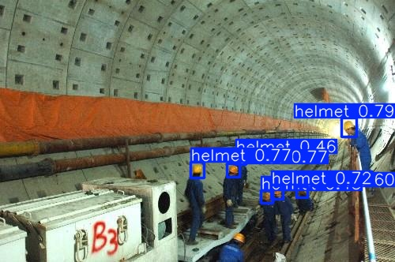
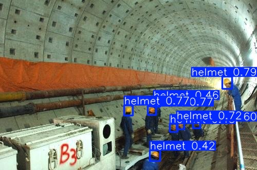
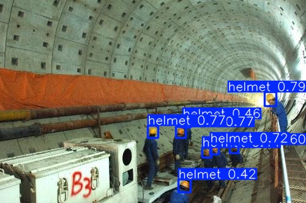

YOLO Helmet Detection — единый dashboard
Главная страница проверки проекта. Здесь собраны ответы на замечания, методология, результаты и ссылки на raw-файлы, чтобы руководителю не искать всё по .md/.csv/.txt.
Класс: helmetМодель: YOLO11nGPU: RTX 4070 12 GBRuntime: PyTorch / ONNX / TensorRTИтог: TensorRT FP161. Изменения
| Проблема | Что сделано | Где смотреть |
|---|---|---|
| Кода обучения нет | Добавлен отдельный скрипт обучения YOLO11n на helmet. | scripts/train_helmet.py |
| Не понятно что с моделью | Показан pipeline: датасет → train → export → validate → benchmark. | scripts/filter_helmet_dataset.pyscripts/train_helmet.pyscripts/export_validate.py |
| Нет анализа графов исполнения | Сохранены original ONNX graph и ONNX Runtime optimized graph. Для TensorRT сохранены info/error файлы. | runtime_graphs/ |
| Неясно, откуда миллисекунды | Описана методология: Ultralytics model.val(), строка Speed, inference ms/image. | Раздел 4 ниже |
| Не указана видеокарта | Указана RTX 4070 12 GB VRAM. | Раздел 4 ниже |
| INT8/FP16 неочевидно | Сделаны warmup + 5 повторов. Вывод: INT8 примерно равен FP16 по скорости, но ниже по качеству. | results/benchmark_runtime_repeated.csvresults/benchmark_summary.csv |
| Отсутствие возможности воспроизведения | Добавлены скрипты этапов и старт через один файл. | start.bat |
2. Форматы файлов
| Формат | Файл | Что значит |
|---|---|---|
.pt | yolo11n.pt / runs/train_helmet/weights/best.pt | PyTorch-веса. yolo11n.pt — стартовая модель, best.pt — результат дообучения. |
.onnx | results/models/helmet_yolo11n.onnx | Универсальный формат для ONNX Runtime. |
.engine | results/models/helmet_yolo11n_fp16.engineresults/models/helmet_yolo11n_int8.engine | TensorRT engine для быстрого запуска на NVIDIA GPU. FP16 — половинная точность, INT8 — квантизация. |
3. Датасет и обучение
Использовался датасет рабочих касок. Из исходных классов оставлен один целевой класс helmet.
| Модель | YOLO11n |
|---|---|
| Класс | helmet |
| Train | 4832 images / 14884 helmet objects |
| Val/Test | 1604 images / 4863 helmet objects |
| Epochs | 30 |
| imgsz | 640 |
| batch train | 16 |
| результат | runs/train_helmet/weights/best.pt |
4. Методология замеров
| GPU | NVIDIA GeForce RTX 4070, 12 GB VRAM |
|---|---|
| OS | Windows 10 |
| Python | 3.11.7 |
| CUDA/PyTorch | CUDA 12.6 / PyTorch 2.12.1+cu126 |
| imgsz | 640 |
| batch benchmark | 1 |
| повторы | warmup + 5 повторных прогонов |
| источник ms | Ultralytics Speed → inference ms/image |
5. Результаты runtime
| Runtime | Формат | Inference avg | Median | mAP50-95 | Вывод |
|---|---|---|---|---|---|
| PyTorch | .pt | ~4.98 ms | ~4.10 ms | ~0.679 | baseline |
| ONNX Runtime CUDA | .onnx | ~3.04 ms | ~2.90 ms | ~0.679 | быстрее PyTorch |
| TensorRT FP16 | .engine | ~1.52 ms | ~1.50 ms | ~0.679 | лучший практический вариант |
| TensorRT INT8 | .engine | ~1.50 ms | ~1.50 ms | ~0.663 | меньше engine, но ниже качество |
Вывод: TensorRT дал главное ускорение. INT8 не дал заметного ускорения относительно FP16 на маленькой YOLO11n при batch=1, но снизил качество, поэтому выбирать лучше FP16.
Сводка из CSV
| runtime | repeats | inference_ms_values | inference_ms_mean | inference_ms_median | inference_ms_min | inference_ms_max | precision_mean | recall_mean | mAP50_mean | mAP50-95_mean |
|---|---|---|---|---|---|---|---|---|---|---|
| PyTorch | 5 | 6.366 / 6.944 / 4.135 / 3.66 / 3.761 | 4.973 | 4.135 | 3.66 | 6.944 | 0.9635 | 0.9343 | 0.981 | 0.6785 |
| ONNX Runtime CUDA | 5 | 3.269 / 3.183 / 2.897 / 2.916 / 2.872 | 3.027 | 2.916 | 2.872 | 3.269 | 0.9604 | 0.9368 | 0.9808 | 0.6789 |
| TensorRT FP16 | 5 | 1.464 / 1.47 / 1.484 / 1.55 / 1.457 | 1.485 | 1.47 | 1.457 | 1.55 | 0.9604 | 0.9369 | 0.9809 | 0.6786 |
| TensorRT INT8 | 5 | 1.518 / 1.525 / 1.529 / 1.526 / 1.531 | 1.526 | 1.526 | 1.518 | 1.531 | 0.9596 | 0.9318 | 0.9778 | 0.6625 |
Повторные замеры из CSV
| runtime | repeat | model | gpu | imgsz | batch | total_seconds | preprocess_ms | inference_ms | postprocess_ms | fps_from_inference_ms | precision | recall | mAP50 | mAP50-95 |
|---|---|---|---|---|---|---|---|---|---|---|---|---|---|---|
| PyTorch | 1 | D:\YOLOPractice\runs\train_helmet\weights\best.pt | NVIDIA GeForce RTX 4070 | 640 | 1 | 33.7983 | 1.0215960095515777 | 6.366259351692353 | 1.1175885906357648 | 157.08 | 0.9635247662522516 | 0.9343056622372675 | 0.9809992113734052 | 0.6784739309980207 |
| PyTorch | 2 | D:\YOLOPractice\runs\train_helmet\weights\best.pt | NVIDIA GeForce RTX 4070 | 640 | 1 | 35.8406 | 1.053396695689182 | 6.943920448948187 | 1.1780173941257008 | 144.01 | 0.9635247662522516 | 0.9343056622372675 | 0.9809992113734052 | 0.6784739309980207 |
| PyTorch | 3 | D:\YOLOPractice\runs\train_helmet\weights\best.pt | NVIDIA GeForce RTX 4070 | 640 | 1 | 27.5838 | 0.810870511114465 | 4.134687157713592 | 0.8501360973327576 | 241.86 | 0.9635247662522516 | 0.9343056622372675 | 0.9809992113734052 | 0.6784739309980207 |
| PyTorch | 4 | D:\YOLOPractice\runs\train_helmet\weights\best.pt | NVIDIA GeForce RTX 4070 | 640 | 1 | 25.7864 | 0.7544963220262115 | 3.6597547379070936 | 0.7384426442109643 | 273.24 | 0.9635247662522516 | 0.9343056622372675 | 0.9809992113734052 | 0.6784739309980207 |
| PyTorch | 5 | D:\YOLOPractice\runs\train_helmet\weights\best.pt | NVIDIA GeForce RTX 4070 | 640 | 1 | 26.0317 | 0.7625424564468264 | 3.7613123444262007 | 0.7512607859787844 | 265.86 | 0.9635247662522516 | 0.9343056622372675 | 0.9809992113734052 | 0.6784739309980207 |
| ONNX Runtime CUDA | 1 | D:\YOLOPractice\results\models\helmet_yolo11n.onnx | NVIDIA GeForce RTX 4070 | 640 | 1 | 26.2147 | 0.9373102248286331 | 3.2690711969891773 | 0.8386841017411478 | 305.9 | 0.9603664515389149 | 0.9367584253822866 | 0.9808459848219486 | 0.6789209693208312 |
| ONNX Runtime CUDA | 2 | D:\YOLOPractice\results\models\helmet_yolo11n.onnx | NVIDIA GeForce RTX 4070 | 640 | 1 | 26.1157 | 0.9415648376323548 | 3.1826969435289874 | 0.8464038661336224 | 314.2 | 0.9603664515389149 | 0.9367584253822866 | 0.9808459848219486 | 0.6789209693208312 |
| ONNX Runtime CUDA | 3 | D:\YOLOPractice\results\models\helmet_yolo11n.onnx | NVIDIA GeForce RTX 4070 | 640 | 1 | 25.1739 | 0.8956554854268955 | 2.8967865350240483 | 0.7777241895618637 | 345.21 | 0.9603664515389149 | 0.9367584253822866 | 0.9808459848219486 | 0.6789209693208312 |
| ONNX Runtime CUDA | 4 | D:\YOLOPractice\results\models\helmet_yolo11n.onnx | NVIDIA GeForce RTX 4070 | 640 | 1 | 25.0767 | 0.8990382797074878 | 2.9164567326156057 | 0.7699109104614672 | 342.88 | 0.9603664515389149 | 0.9367584253822866 | 0.9808459848219486 | 0.6789209693208312 |
| ONNX Runtime CUDA | 5 | D:\YOLOPractice\results\models\helmet_yolo11n.onnx | NVIDIA GeForce RTX 4070 | 640 | 1 | 24.7847 | 0.8923420199904907 | 2.872428989499178 | 0.7816400871602842 | 348.14 | 0.9603664515389149 | 0.9367584253822866 | 0.9808459848219486 | 0.6789209693208312 |
| TensorRT FP16 | 1 | D:\YOLOPractice\results\models\helmet_yolo11n_fp16.engine | NVIDIA GeForce RTX 4070 | 640 | 1 | 22.6759 | 0.9150480052953855 | 1.4642574816409202 | 0.801391023023349 | 682.94 | 0.9604389955726034 | 0.9368702447049146 | 0.9809114709047274 | 0.6786159654851616 |
| TensorRT FP16 | 2 | D:\YOLOPractice\results\models\helmet_yolo11n_fp16.engine | NVIDIA GeForce RTX 4070 | 640 | 1 | 22.5771 | 0.8900970075917581 | 1.4698159600566825 | 0.795996820924576 | 680.36 | 0.9604389955726034 | 0.9368702447049146 | 0.9809114709047274 | 0.6786159654851616 |
| TensorRT FP16 | 3 | D:\YOLOPractice\results\models\helmet_yolo11n_fp16.engine | NVIDIA GeForce RTX 4070 | 640 | 1 | 22.7736 | 0.9148171443496239 | 1.484119139325473 | 0.8196197634146541 | 673.8 | 0.9604389955726034 | 0.9368702447049146 | 0.9809114709047274 | 0.6786159654851616 |
| TensorRT FP16 | 4 | D:\YOLOPractice\results\models\helmet_yolo11n_fp16.engine | NVIDIA GeForce RTX 4070 | 640 | 1 | 22.9712 | 0.9105379685299109 | 1.5500114699843062 | 0.8149649620191438 | 645.16 | 0.9604389955726034 | 0.9368702447049146 | 0.9809114709047274 | 0.6786159654851616 |
| TensorRT FP16 | 5 | D:\YOLOPractice\results\models\helmet_yolo11n_fp16.engine | NVIDIA GeForce RTX 4070 | 640 | 1 | 23.0539 | 0.8957800502930082 | 1.4565829169849964 | 0.8216922692815191 | 686.54 | 0.9604389955726034 | 0.9368702447049146 | 0.9809114709047274 | 0.6786159654851616 |
| TensorRT INT8 | 1 | D:\YOLOPractice\results\models\helmet_yolo11n_int8.engine | NVIDIA GeForce RTX 4070 | 640 | 1 | 22.7819 | 0.9112808599872422 | 1.5183026173910907 | 0.8051779294331928 | 658.63 | 0.9595530051591942 | 0.9317766254842134 | 0.9777757821537159 | 0.6625444217480048 |
| TensorRT INT8 | 2 | D:\YOLOPractice\results\models\helmet_yolo11n_int8.engine | NVIDIA GeForce RTX 4070 | 640 | 1 | 22.8322 | 0.9157209480187143 | 1.5248540520930474 | 0.8143897752156783 | 655.8 | 0.9595530051591942 | 0.9317766254842134 | 0.9777757821537159 | 0.6625444217480048 |
| TensorRT INT8 | 3 | D:\YOLOPractice\results\models\helmet_yolo11n_int8.engine | NVIDIA GeForce RTX 4070 | 640 | 1 | 22.8966 | 0.8976551748526531 | 1.5289127187132185 | 0.8307197006382141 | 654.06 | 0.9595530051591942 | 0.9317766254842134 | 0.9777757821537159 | 0.6625444217480048 |
| TensorRT INT8 | 4 | D:\YOLOPractice\results\models\helmet_yolo11n_int8.engine | NVIDIA GeForce RTX 4070 | 640 | 1 | 22.6587 | 0.9134360975928446 | 1.525798068328719 | 0.8072865966279548 | 655.39 | 0.9595530051591942 | 0.9317766254842134 | 0.9777757821537159 | 0.6625444217480048 |
| TensorRT INT8 | 5 | D:\YOLOPractice\results\models\helmet_yolo11n_int8.engine | NVIDIA GeForce RTX 4070 | 640 | 1 | 22.8489 | 0.9071654609292443 | 1.5306329180311151 | 0.826804051801337 | 653.32 | 0.9595530051591942 | 0.9317766254842134 | 0.9777757821537159 | 0.6625444217480048 |
Для Excel созданы копии с разделителем ;: results/benchmark_summary_excel.csv и results/benchmark_runtime_repeated_excel.csv.
6. Анализ графов исполнения
В dashboard вынесена суть, raw-файлы остаются доказательством.
| Статус | Файл | Что показывает |
|---|---|---|
| ✅ | runtime_graphs/onnx_original_ops.txt | операторы исходного ONNX-графа |
| ✅ | runtime_graphs/onnx_ort_optimized_ops.txt | операторы после оптимизации ONNX Runtime |
| ✅ | runtime_graphs/tensorrt_fp16_engine_info.txt | информация по TensorRT FP16 engine |
| ✅ | runtime_graphs/tensorrt_int8_engine_info.txt | информация по TensorRT INT8 engine |
7. Ключевые файлы проекта
| Статус | Что | Файл | Зачем |
|---|---|---|---|
| ✅ | Код обучения | scripts/train_helmet.py | закрывает замечание «кода обучения нет» |
| ✅ | Фильтрация датасета | scripts/filter_helmet_dataset.py | доказывает подготовку нового класса helmet |
| ✅ | Экспорт/валидация | scripts/export_validate.py | PyTorch → ONNX → TensorRT FP16/INT8 |
| ✅ | Benchmark | scripts/benchmark_runtimes.py | warmup + повторные замеры runtime |
| ✅ | Сводка benchmark | scripts/summarize_benchmark.py | итоговые таблицы |
| ✅ | ORT optimized graph | scripts/save_ort_optimized_graph.py | сохранение оптимизированного ONNX Runtime graph |
| ✅ | Анализ графов | scripts/inspect_runtime_graphs.py | ONNX/ORT/TensorRT graph evidence |
| ✅ | Raw CSV | results/benchmark_runtime_repeated.csv | сырые повторные замеры |
| ✅ | Summary CSV | results/benchmark_summary.csv | сводка по runtime |
| ✅ | ONNX original ops | runtime_graphs/onnx_original_ops.txt | операторы исходного ONNX-графа |
| ✅ | ORT optimized ops | runtime_graphs/onnx_ort_optimized_ops.txt | операторы после оптимизации ORT |
Папки
scripts/ | код эксперимента |
datasets/ | датасет |
runs/ | выходы Ultralytics |
results/ | финальные результаты и CSV |
runtime_graphs/ | анализ графов |
report_assets/ | картинки для отчёта |
demo/runtime_dashboard.html | главная страница проверки |
8. Визуальные материалы






9. Команды
Открыть проект для проверки:
cd /d D:\YOLOPractice start.bat
Пересобрать dashboard:
cd /d D:\YOLOPractice .venv\Scripts\python.exe scripts\build_dashboard.py start demo\runtime_dashboard.html
Повторить runtime benchmark:
cd /d D:\YOLOPractice run_runtime_benchmark.bat
Generated: 2026-06-29 16:25:57 · Root: D:\YOLOPractice